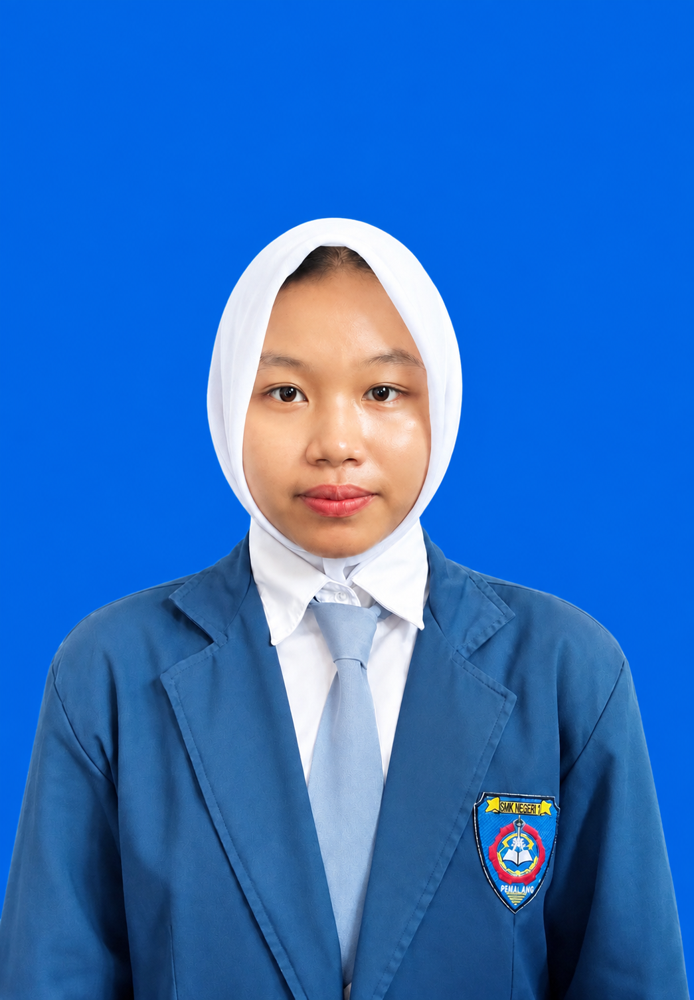

🌐
JARINGAN
Topologi Jaringan
Mempelajari rancangan jaringan komputer menggunakan Cisco Packet Tracer.
HALO, SELAMAT DATANG 👋
Saya adalah siswa kelas XII TKJ A yang tertarik dengan teknologi, jaringan komputer, dan pembuatan website. Saya senang mempelajari hal baru serta mengembangkan kemampuan di bidang teknologi informasi.

KENALI SAYA
Saya merupakan siswa kelas XII TKJ A jurusan Teknik Komputer dan Jaringan. Saya mempelajari instalasi jaringan, konfigurasi perangkat, troubleshooting, serta pembuatan website menggunakan HTML dan CSS. Saya ingin terus meningkatkan keterampilan, kreativitas, kedisiplinan, dan tanggung jawab.
Tiara
XII TKJ A
Teknik Komputer dan Jaringan
KEMAMPUAN SAYA
Mengenal perangkat keras, perangkat lunak, dan sistem operasi komputer.
Mempelajari topologi jaringan, IP address, kabel LAN, dan perangkat jaringan.
Membuat halaman website dengan tampilan yang menarik dan responsif.
Mempelajari cara menemukan dan mengatasi masalah komputer serta jaringan.
HASIL PEMBELAJARAN
Mempelajari rancangan jaringan komputer menggunakan Cisco Packet Tracer.
Membuat website profil pribadi menggunakan HTML dan CSS.
Mempelajari pengalamatan IP, pengkabelan LAN, dan konfigurasi perangkat jaringan.
PENGALAMAN KERJA
Praktik Kerja Lapangan (PKL) · 6 Bulan
Melaksanakan PKL pada bagian inspeksi. Saya mendapatkan pengalaman mengenal proses kerja industri dan pemeriksaan produk, serta belajar mengenai ketelitian, kedisiplinan, tanggung jawab, dan kerja sama.
HUBUNGI SAYA
Terima kasih telah mengunjungi portofolio saya. Saya akan terus belajar dan berkembang di bidang teknologi.
📧 tiara90908@gmail.com
✉ Kirim Email